Yun Xiao Juan
Author: Chang Xu
Unleash the Intelligence of AI for Customized and Compelling Questions that Connect with Your Quiz-takers!
1 APPLICATION SCENARIO, TERMINAL USERS AND THEIR NEEDS
These contents involve application scenarios and targeted end users and their needs.
1.1 Application ScenarioYun Xiao Juan is an educational tool designed to support teachers and students. It features intelligent question generation, quick access to study materials, and personalized analysis of mistakes.
1.2 Terminal Users and Their Needs- Teacher’s Needs: Teachers can use the intelligent question generation function to create practical exercises and exam questions, and quickly access study materials to prepare teaching content more efficiently.
- Student’s Needs: Students can use Yun Xiao Juan to search for additional learning materials and receive personalized learning recommendations based on their mistakes. Other products assess the same knowledge points, but cannot tailor question type and solution strategy. Yun Xiao Juan' s question generation, study material search, and mistake analysis functions are customized to meet users' needs. User feedback is also collected and incorporated into the system for adaptive modification.
2 APPLICATION USAGE
2.1 Analytical Question Generation in Application Usage: Simplified ShowcaseThis is the Analytical Question Generation Function, which allows you to see how it analyzes your learning progress based on your performance, and generates personalized exercises to fill any gaps.
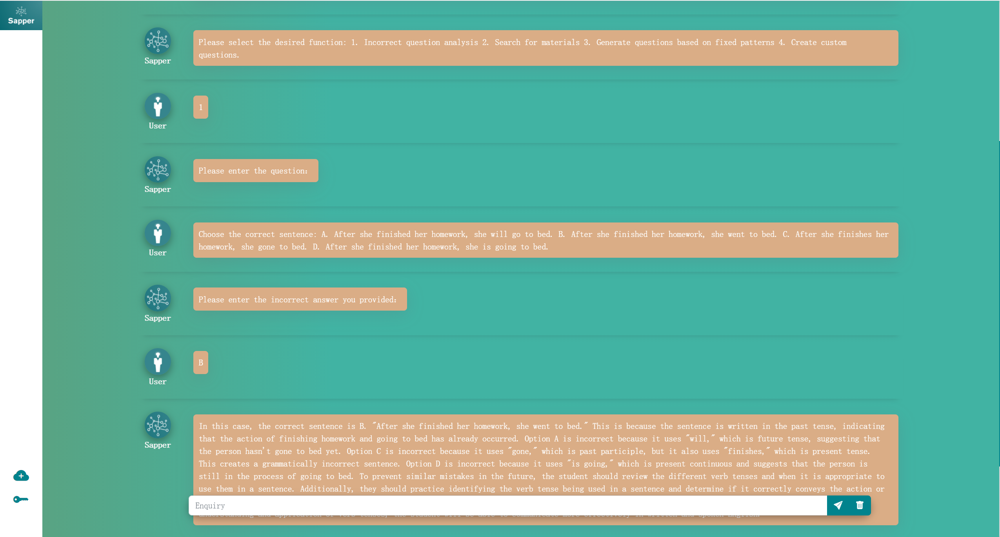 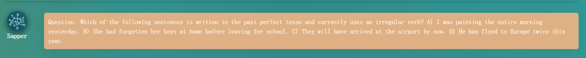Fig-1:Analytical Question Generation in Application Usage
2.2 Material-Based Question Generation in Application Usage: Simplified ShowcaseThis is the Material-Based Question Generation Function. You can choose the material type and input content requirements to generate the corresponding question materials. After entering the requirements for the question, you can generate the corresponding exercise.
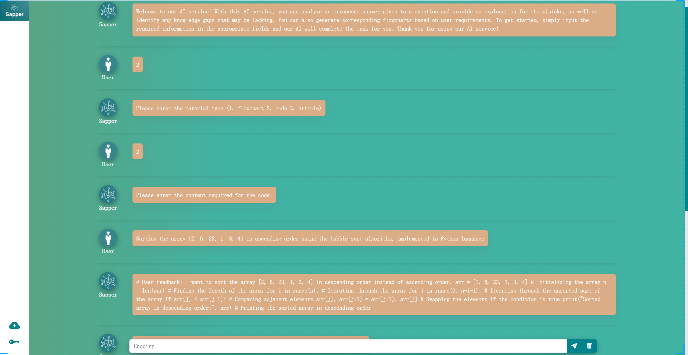Fig-2:Material-Based Question Generation in Application Usage
3 Explorations with LLM
Now, we will explore task knowledge, experiment with prompt effectiveness, and summarize challenges involved in generating accurate and user-friendly questions and assessments.
3.1 ExplorationWe identified key conditions for question generation through online searches and interactions with the large model, such as knowledge points tested by the question and corresponding question type.
3.2 ExperimentationDirectly generating questions using the model's templates may not meet requirements. Detailed templates are needed, and the model may not always understand user needs, so it's necessary to extract requirements before generating custom questions.
3.3 Ai-chain Design
Fig-3: Analytical Question Generation System Design

Fig-4: Material-Based Question Generation System Design
3.4 Sapper Design 3.4.1 Start Menu Function- Select function: Select Start-up menu with user input selection based on numerical prompts for corresponding functions.
Fig-5: Start Menu
3.4.1 Analytical Question Generation Function：- Module for analyzing incorrect answers: Based on the user's input of incorrect questions and answers, analyze the reasons for the errors, the knowledge points that the user has not mastered, and provide learning advice for the knowledge points that the user has not mastered.
- User feedback template: After outputting the analysis results, the user is asked to choose whether they are satisfied or not, and decide whether to regenerate；
- Question generation template: After the loop ends, the learning analysis results are passed to the question generation module as one of the requirements for generating questions. Users can learn the knowledge points they have not mastered before by inputting other conditions to generate questions.
Fig-6: Analytical Question Generation
The program's output display: 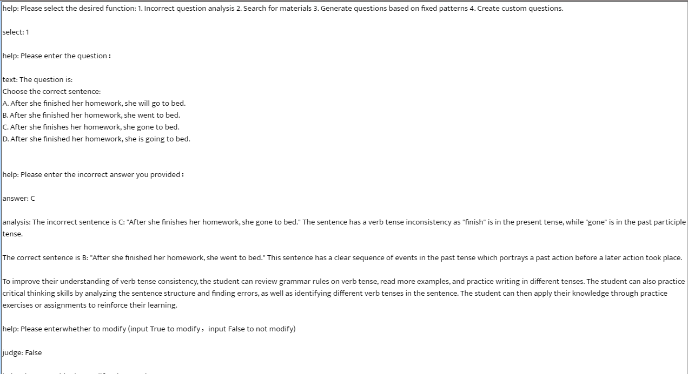Fig-7: Module for Analyzing Incorrect Answers
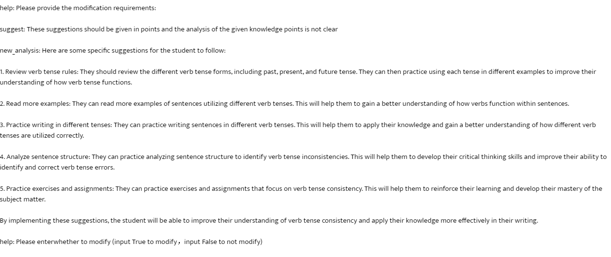Fig-8: User Feedback Template
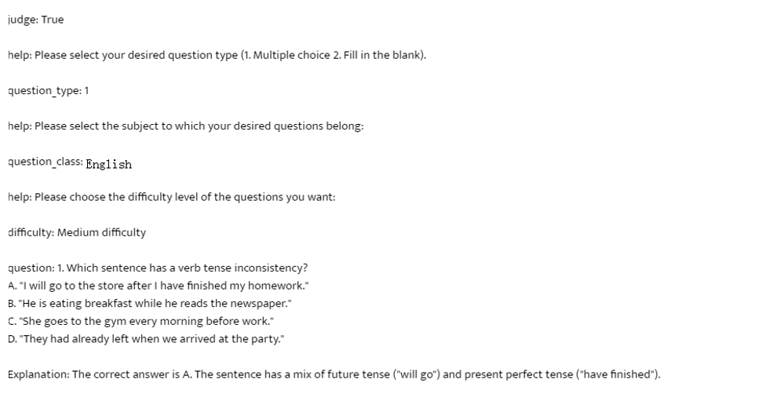Fig-9: Question Generation Template
3.4.2 Material-Based Question Generation Function:- Find Material Module: After the user selects the type of material they want to search for, they enter the corresponding refined module, where they continue to input their content requirements. The worker then generates the corresponding material based on the user's inputs；
- User feedback template: After outputting the analysis results, the user is asked to choose whether they are satisfied or not, and decide whether to regenerate；
- Information extraction model: extracts relevant information related to the question from the user's input based on predefined patterns.
- Generation Module: After the loop ends, the generated materials are passed to the question generation module as reference material for generating questions based on user inputted conditions. The worker analyzes the question generation conditions provided by the user and generates questions and answers accordingly.
Fig-10: Material-Based Question Generation
The program's output display: 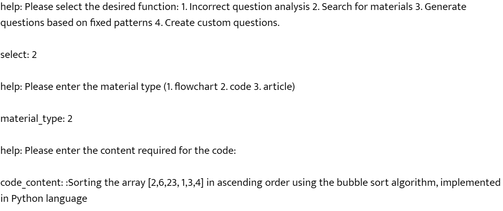 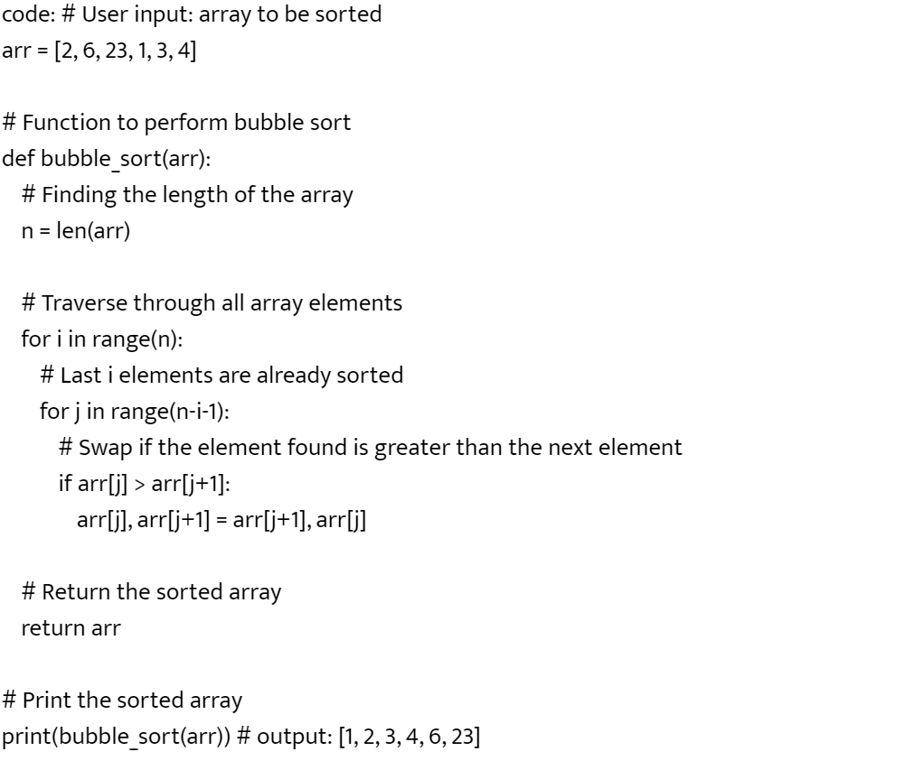Fig-11: Find Material Module
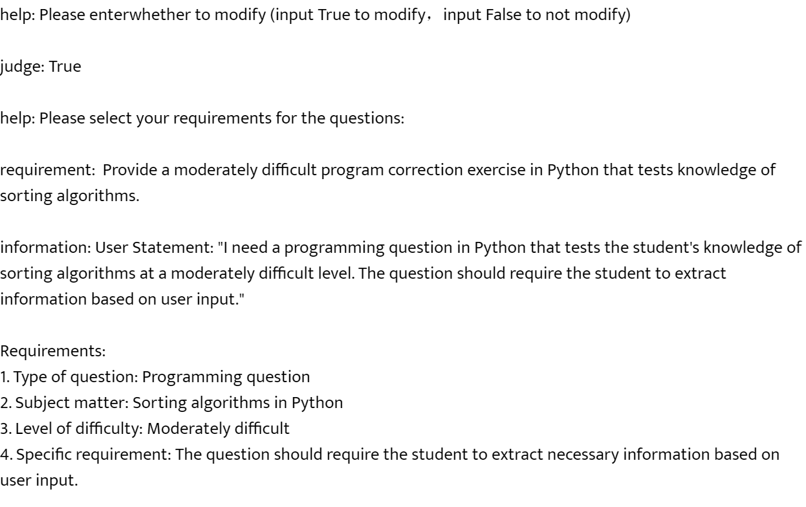Fig-12: Information Extraction Model
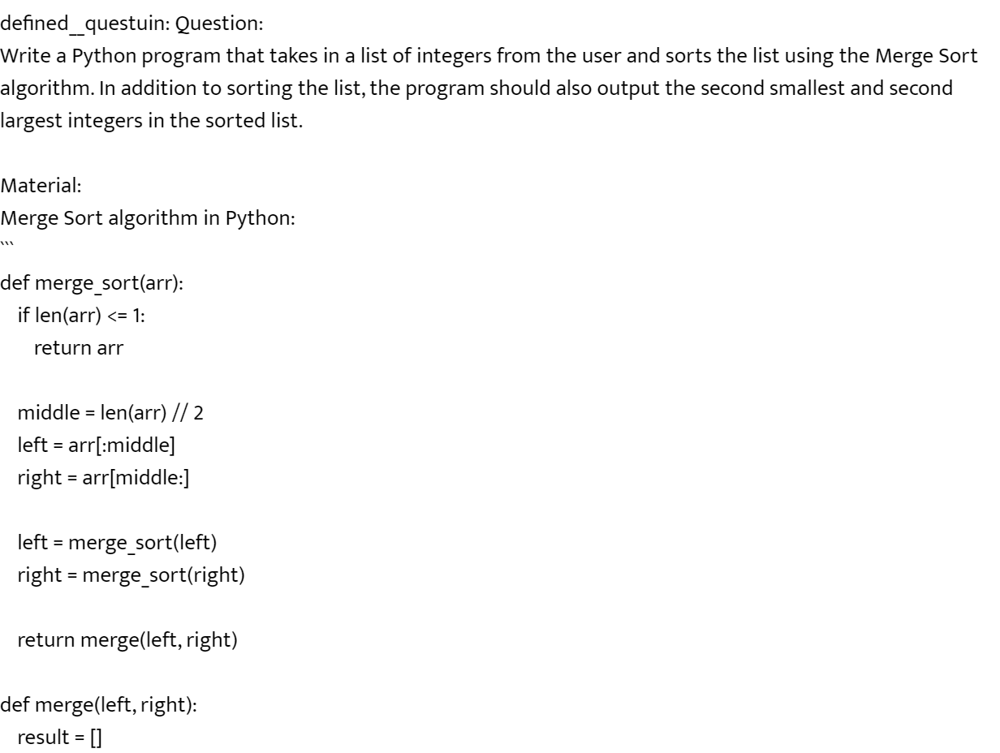 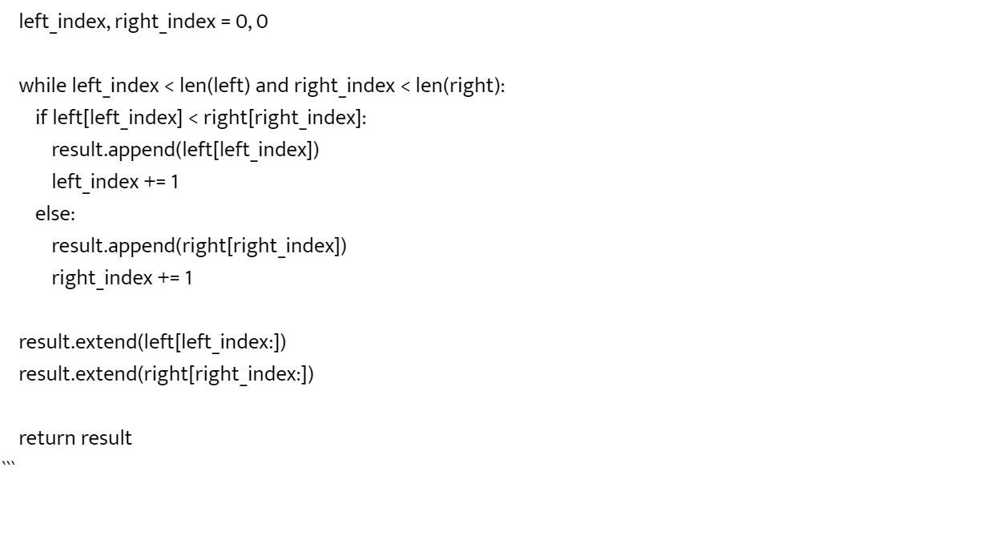Fig-13: Generation Module
4 DEVELOPMENT EXPERIENCE AND FUTURE PROSPECTS
4.1 My Impression of Using Sapper- Easy operation: Compared to traditional text-based programming languages, visual programming tools are more intuitive and easier to understand, making it easier for beginners to understand and use, lowering the user threshold.
- Efficient programming: Visual programming tools can save a lot of time and effort, as developers can create complex programs and processes through simple drag-and-drop and click operations, without the need to manually write code.
- Full-featured: It can call multiple models, such as gpt-3.5-turbo, DALL-E, and also use code modules such as loops and conditional statements. It has a debug function, which is convenient for debugging. When writing prompts, it also provides categorization to prevent the prompts from being too long and facilitate user modification, which improves the accuracy of the model's response.
Now, we will explore task knowledge, experiment with prompt effectiveness, and summarize challenges involved in generating accurate and user-friendly questions and assessments.